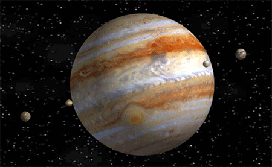

Jupiter is the fifth planet from the Sun and the largest in the Solar System. It is a gas giant with a mass more than two and a half times that of all the other planets in the Solar System combined, but slightly less than one-thousandth the mass of the Sun.
Jupiter is the third-brightest natural object in the Earth's night sky after the Moon and Venus. It has been observed since pre-historic times and is named after the Roman god Jupiter, the king of the gods, because of its observed size.
Jupiter is primarily composed of hydrogen, but helium comprises one quarter of its mass and one tenth of its volume. It likely has a rocky core of heavier elements,[17] but like the other giant planets, Jupiter lacks a well-defined solid surface. The on-going contraction of its interior generates heat greater than the amount received from the Sun. Because of its rapid rotation, the planet's shape is that of an oblate spheroid; it has a slight but noticeable bulge around the equator.
The outer atmosphere is visibly segregated into several bands at different latitudes, with turbulence and storms along their interacting boundaries. A prominent result of this is the Great Red Spot, a giant storm that is known to have existed since at least the 17th century, when it was first seen by telescope.
Surrounding Jupiter is a faint planetary ring system and a powerful magnetosphere. Jupiter's magnetic tail is nearly 800 million km long, covering the entire distance to Saturn's orbit. Jupiter has 79 known moons and possibly many more,[18] including the four large Galilean moons discovered by Galileo Galilei in 1610. Ganymede, the largest of these, has a diameter greater than that of the planet Mercury.

click here For More deatils